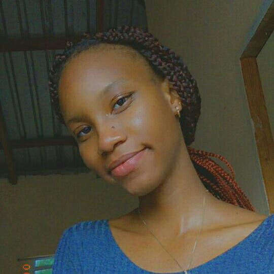

ECO Air SLU
Cleaner air everywhere
Meet the Founder

Hello there! My name is Michelle St. Hilaire,
I am 18 years old and a native of the tiny but beautiful island of St. Lucia.
My interests inculde graphic design, drawing, animation and anything to do with art.
Growing up, the burning of leaves and bush after cleaning the yard on an early Sunday
morning was normal. Everyone did it. Most people did not seem bothered unless their
freshly washed laundry smelt of smoke. But I always hated it. I still do.
I may not have known the full environmental imapct of it at a young age, but I knew enough to know
that it was wrong. The state of the atmoshpere has been an issue for many years now
and it has only gotten worse. This affects not only our health, but the climate and ultimately the lives
of all organisms.
So I decided to start this organaization to spread awareness and lessen the damage to the atmoshpere and the planet on a whole.
Starting small, with St. Lucia. Wouldn't it be great to breathe in fresh, clean air without pollutants?
That could be possible! Join the cause, help make our air and planet clean again.